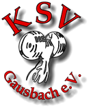

<ion-menu side="start" contentId="main-content">
  <ion-header>
    <ion-toolbar>
      <ion-buttons slot="start">
        <ion-menu-button style="color: #ffffff"></ion-menu-button>
      </ion-buttons>
      <div class="content">
        <div class="logo-container">
          
          <ion-title class="title">KSV Gausbach e.V.</ion-title>
        </div>
      </div>
    </ion-toolbar>
  </ion-header>
  <ion-content>
    <ion-list class="menu-list" lines="none">
      <ion-menu-toggle auto-hide="false">
        <ion-item [class.selected]="selectedTab === 'Home'" button (click)="navigateTo('/Home', 'Home')">
          <ion-icon slot="start" name="home-outline"></ion-icon>
          <ion-label>Home</ion-label>
        </ion-item>
      </ion-menu-toggle>
      <ion-menu-toggle auto-hide="false">
        <ion-item [class.selected]="selectedTab === 'Informationen'" button (click)="navigateTo('/Informationen', 'Informationen')">
          <ion-icon slot="start" name="information-outline"></ion-icon>
          <ion-label>Informationen</ion-label>
        </ion-item>
      </ion-menu-toggle>
      <ion-menu-toggle auto-hide="false">
        <ion-item [class.selected]="selectedTab === 'Meldungen'" button (click)="navigateTo('/Meldungen', 'Meldungen')">
          <ion-icon slot="start" name="mail-unread-outline"></ion-icon>
          <ion-label>Meldungen</ion-label>
        </ion-item>
      </ion-menu-toggle>
      <ion-menu-toggle auto-hide="false">
        <ion-item [class.selected]="selectedTab === 'Trainingspläne'" button (click)="navigateTo('/Trainingspläne', 'Trainingspläne')">
          <ion-icon slot="start" name="clipboard-outline"></ion-icon>
          <ion-label>Trainingspläne</ion-label>
        </ion-item>
      </ion-menu-toggle>
      <ion-menu-toggle auto-hide="false">
        <ion-item [class.selected]="selectedTab === 'Geräte'" button (click)="navigateTo('/Geräte', 'Geräte')">
          <ion-icon slot="start" name="bicycle-outline"></ion-icon>
          <ion-label>Geräte</ion-label>
        </ion-item>
      </ion-menu-toggle>
      <ion-menu-toggle auto-hide="false">
        <ion-item [class.selected]="selectedTab === 'Ernährung'" button (click)="navigateTo('/Ernährung', 'Ernährung')">
          <ion-icon slot="start" name="nutrition-outline"></ion-icon>
          <ion-label>Ernährung</ion-label>
        </ion-item>
      </ion-menu-toggle>
      <ion-menu-toggle auto-hide="false">
        <ion-item [class.selected]="selectedTab === 'Motivation'" button (click)="navigateTo('/Motivation', 'Motivation')">
          <ion-icon slot="start" name="happy-outline"></ion-icon>
          <ion-label>Motivation</ion-label>
        </ion-item>
      </ion-menu-toggle>
    </ion-list>
  </ion-content>
</ion-menu>

<ion-header>
  <ion-toolbar>
    <ion-buttons slot="start">
      <ion-menu-button style="color: #ffffff"></ion-menu-button>
    </ion-buttons>
    <div class="content">
      <div class="logo-container">
        
        <ion-title class="title">KSV Gausbach e.V.</ion-title>
      </div>
    </div>
  </ion-toolbar>
</ion-header>


<ion-content id="main-content">
  <ion-router-outlet></ion-router-outlet>
</ion-content>
